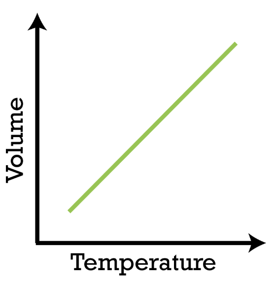
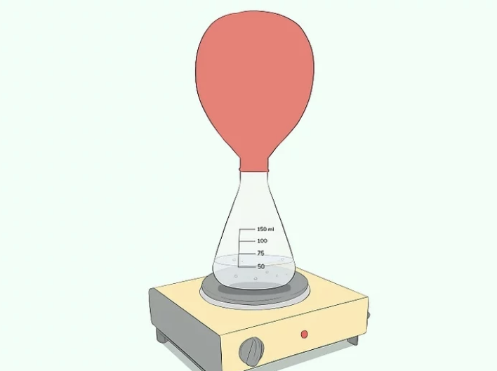

Above is the formula for Charles's Law.
Charles's law states that the volume of a gas equals a constant value multiplied by its temperature as measured on the Kelvin scale where in 0 Kelvin corresponds to -273.15 degrees Celsius). Balloonist Jacques Charles, explains how the volume of gases depends on temperature. Gas molecules, small and far from their neighbors, push outward on surfaces at high speeds. The speed and frequency of gas collisions depend on temperature, causing volume to double. Charles' Law describes how hot air balloons lift off and prevent atmospheric convection currents.
As this graph shows, since pressure now remains constant, and volume and temperature are directly proportional, if one variable increases, the other also increases. In this term, if volume increases, temperature increases, and vice versa.
When pouring water in a beaker and covering the tip with a balloon, the balloon will inflate. This is due to the balloon’s material being elastic which can stretch at a desired size which increases volume as temperature rises.
Here is a walk through an example problem:
A container is filled with 600mL of water on a cool morning (27°C). As the sun rises and the air temperature increases to 57°C, how much will the volume of water inside the container expand, assuming the pressure remains constant?
Let's look back at the formula: V1/T1 = V2/T2
Think: "What is missing?" or "What is it asking for?"
Read the problem carefully and you will notice that the initial volume (V1) is 600mL, the intial temperature (T1) is 27°C, and the final temperature (T2) is 57°c.
This makes our given look like this:
V1 = 600mL
T1 = 27°C
T2 = 57°C
What we are looking for is the final volume (V2).
Remember: Always include the unit of measurements in the final answer.
Before we can start we need to convert Celsius to Kelvin. To do this we add it to 273. °C + 273 = K
T1= 27°C + 273 = 300K
T2= 57°C + 273 = 330K
V1/T1 = V2/T1
This makes our given look like this:
V1 = 600mL
T1 = 300K
T2 = 330K
The final volume (V2) is 660mL.
Note: When dealing with big numbers, you may do it manually but it may be considerably more time consuming than using a calculator. As a tip, exercise these problems often and try not to use a calculator to be used to solving big numbers although if the you are having difficulty and are able to use a calculator, then use it and try to learn more about it so that in the future you can possibly solve it manually as calculators are not always available.